Python, Java, C/C++, MATLAB, R
Lugano, Switzerland · AI Research & Engineering
I build systems that make complex information useful.
I'm Lovnesh Bhardwaj, a software engineer and AI researcher working across information theory, interpretable machine learning, probabilistic modelling, and forecasting systems—from real-time energy markets to structured latent representations.
Focus
Representation Learning
Industry
Energy & Data Systems
Education
MSc Artificial Intelligence
Languages
English · Hindi · Spanish · Italian
01
Technical profile
PyTorch, scikit-learn, pandas, NumPy, Linux, Git, Docker
Information theory, interpretable ML, probabilistic modelling, time-series forecasting
02
Experience
DXT Commodities
Developer · Part-time
- Developed supply-and-demand curve forecasts for day-ahead electricity prices in Italy's NORD zone, combining historical auction curves with weather forecasts and market fundamentals; built calendar-matched and fundamentals-adjusted baselines and trained monotonicity-constrained neural models on bucketed curves.
- Built a hydroelectric scheduling and water-value framework that combined inflow models, Terna storage and generation data, ECMWF inputs, and constrained optimisation; benchmarked seasonal and weather-based regressions against neural networks across multiple random seeds.
- Implemented linear programming with a three-week rolling horizon to estimate water shadow prices, compared model valuations with MGP offer-price distributions, and developed a week-ahead forecast of hydroelectric supply offered at €0/MWh.
- Contributed to transformer-based solar-radiation forecasting from satellite imagery, outperforming ECMWF forecasts up to four hours ahead on MAE and RMSE.
- Built a WebSocket pipeline for high-frequency energy-market data, enabling low-latency analysis and real-time anomaly detection for out-of-distribution bids and offers.
Università della Svizzera italiana
Teaching Assistant · Data Science
- Taught and supported 20+ Bachelor students in applied statistics and data analysis using Python and R.
- Designed programming exercises and tutorials around statistical modeling and data wrangling.
- Led office hours and live sessions on debugging, probability distributions, and interpreting real-world datasets.
- Supported grading and curriculum development to improve student engagement and learning outcomes.
Università della Svizzera italiana
Computational Phylogenetics Research Intern
- Improved maximum-likelihood estimation in diversification models by analyzing numerical instability in Monte Carlo importance sampling for phylogenetic tree likelihoods.
- Optimized evolutionary model parameters with Differential Evolution on the CSCS supercomputing cluster, identifying scalability bottlenecks and proposing machine learning alternatives.
- Prototyped a neural pipeline for parameter inference from branching times and evaluated it against traditional likelihood-based methods.
- Designed preprocessing and simulation tools for phylogenetic trees under speciation and extinction constraints.
03
Research
My research spans information theory and representation learning, interpretable and explainable machine learning, probabilistic modelling and uncertainty quantification, time-series forecasting and spatiotemporal learning, and causal inference with numerical optimisation. I am particularly interested in how models allocate information, encode market structure, and support reliable decisions in generative and energy systems.
Cryptocurrency Market Modelling Using Causal Inference & Sentiment Analysis
A causal inference pipeline combining VADER sentiment analysis with causal methods to evaluate the effect of social sentiment on cryptocurrency markets. The study found no significant causal effect of Twitter sentiment on returns at standard significance levels however, at higher significance levels a weak causal effect from the currency movement to Twitter sentiment was observed.
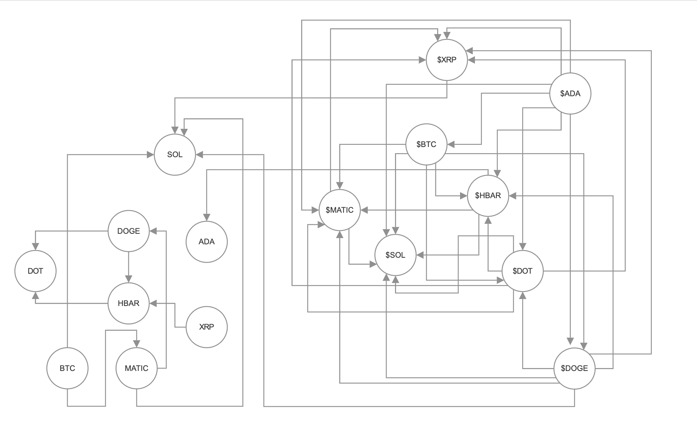
Information Requirements and Allocation in Latent Representations
A rate-distortion and information-theoretic framework for optimal latent compression. The work shows through the Data Processing Inequality that reconstruction is the maximally information-demanding task, and studies how β-weighted KL constraints and information bottlenecks govern the emergence and collapse of latent dimensions.
It also defines a disentanglement method to isolate the generative factors of the dataset that allocates information only to dimensions relevant to the task while suppressing nuisance information.
Master thesis · Qualitative result
Disentanglement, dimension by dimension.
Each loop varies one active latent coordinate while holding the remaining coordinates fixed. The resulting single-factor changes provide a qualitative view of the representation learned by the model.
Dataset 01
dSprites
Five active latent dimensions
Dataset 02
Shapes3D
Six active latent dimensions
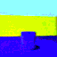
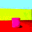
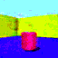
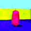
Conference · Poster
Innovation in Dynamic Network Modelling
Presented a poster at the Università della Svizzera italiana workshop on dynamic network modelling. I modelled patent citation dynamics using Relational Event Models with sampled partial likelihood, combining endogenous network effects with time-varying textual and technological similarity. Content similarity and preferential attachment emerged as the dominant drivers of citation propensity.
Shared effects
These covariates are included in both model specifications.
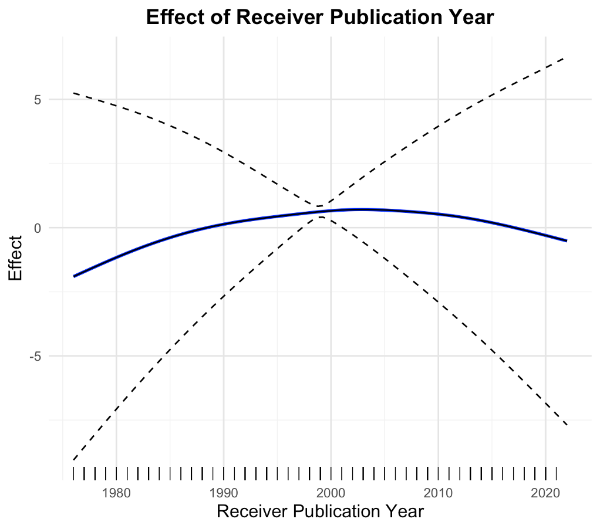
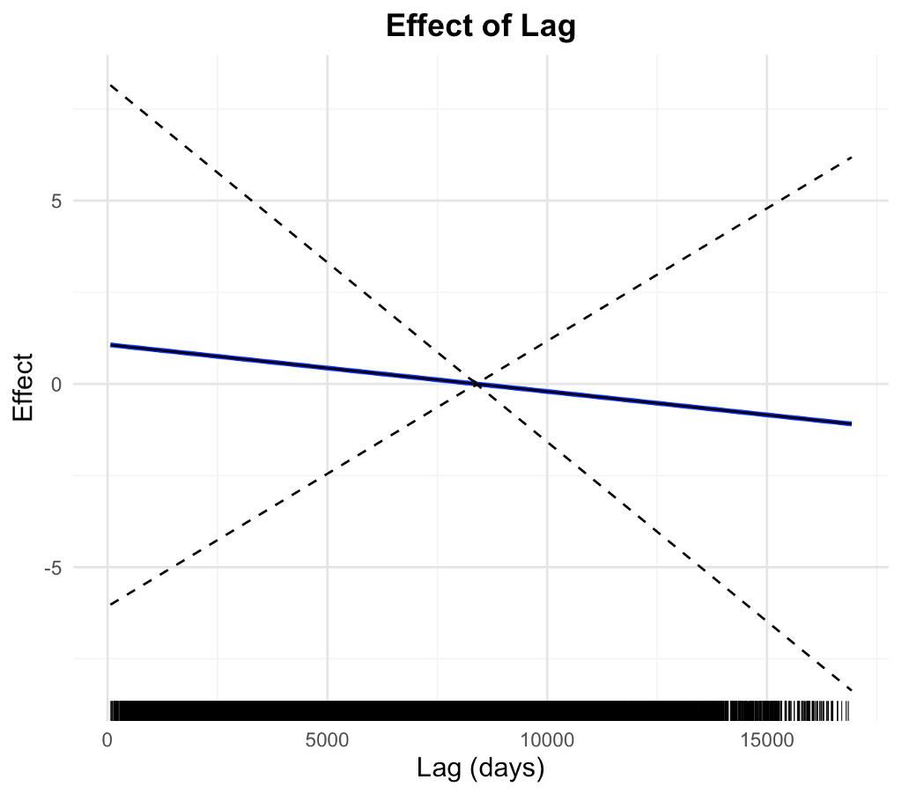
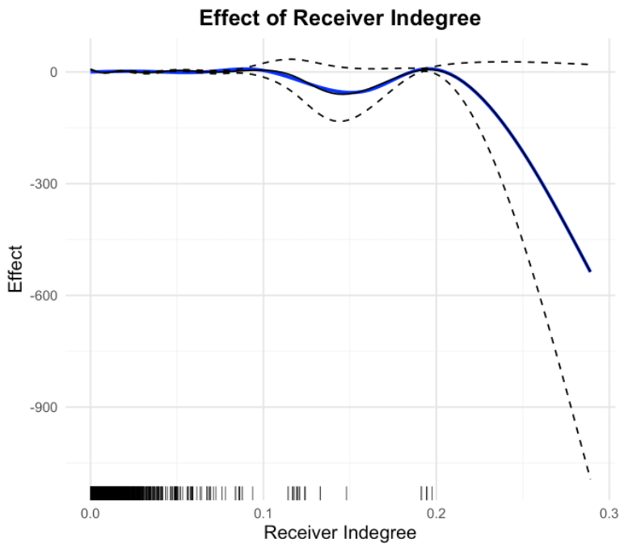
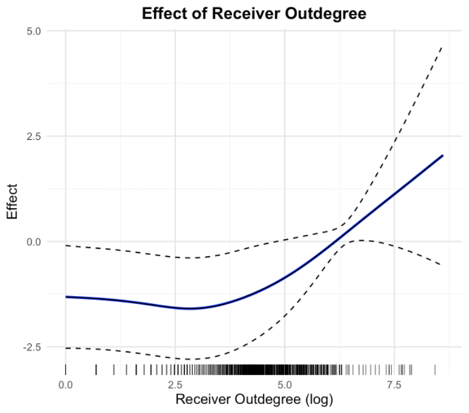
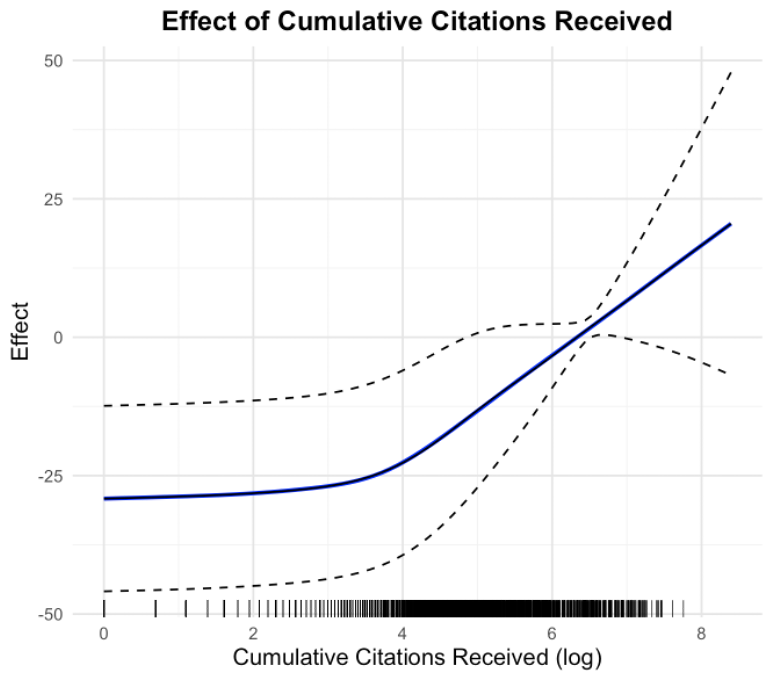
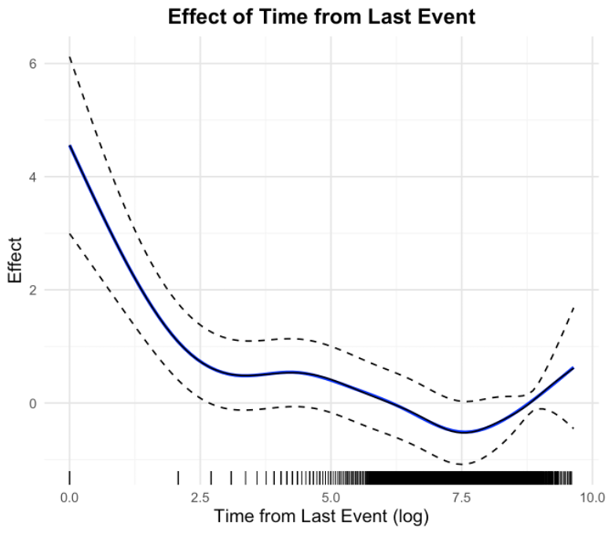
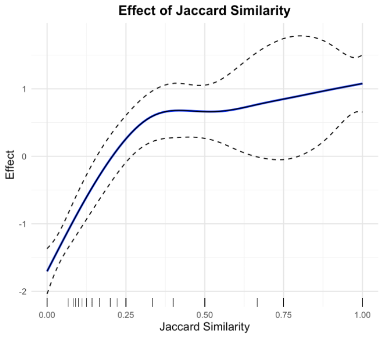
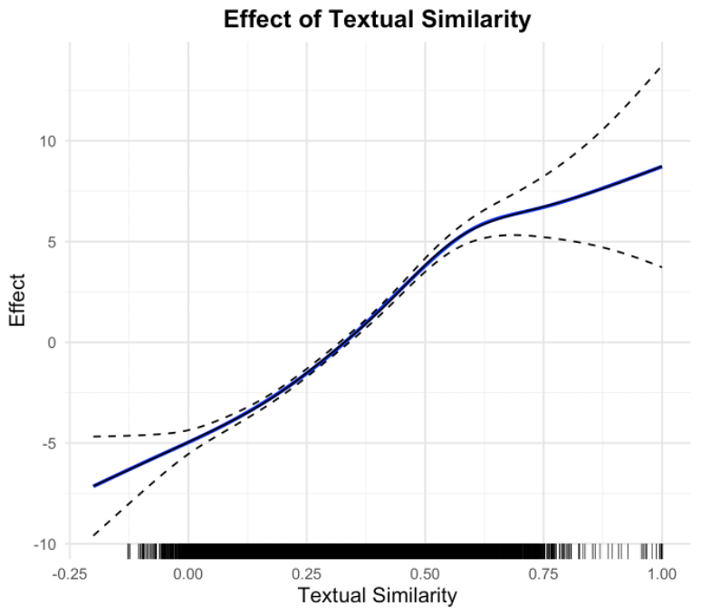
Additional effects
Model 2 adds two time-varying similarity features.
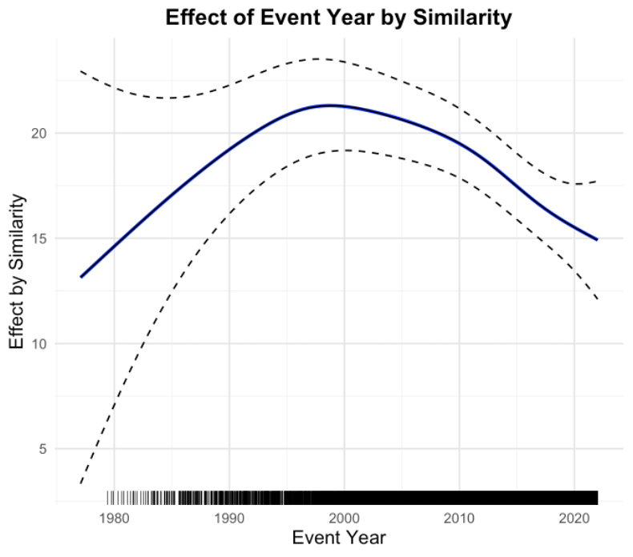
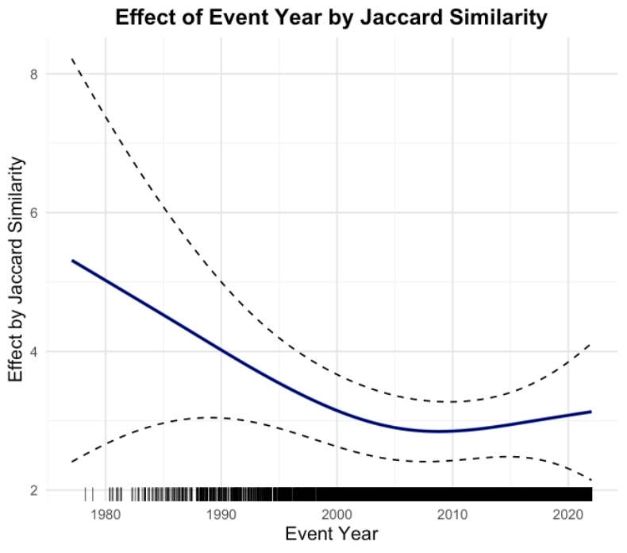
Manuscripts in preparation
01 workRelevance-Gated β-TCVAE
Designs a relevance-gated objective that decomposes the ELBO into relevance-aware components, using sign-asymmetric, per-dimension mutual-information weighting to reward information in task-relevant latent dimensions and suppress nuisance information. The resulting asymmetric incentives construct a learned partition of latent space and achieve competitive performance against state-of-the-art networks.
View the animationsOngoing research
02 tracksMechanistic Interpretability of Transformer-Based Electricity Forecasts
Investigates activation patching, attention analysis, and sparse autoencoders to identify the components responsible for forecasts at different horizons, with targeted ablations testing their causal contribution.
Power-Market Structure in Time-Series Foundation Models
Studies whether model representations encode electricity-market fundamentals and merit-order relationships, and how those representations change after fine-tuning on market data.
04
Selected projects
Spatiotemporal GNNs for Numerical Weather Prediction
Designed and evaluated spatiotemporal GNNs to postprocess wind-speed ensemble forecasts across 152 Swiss weather stations. A MultiScale Graph WaveNet improved CRPS by 5% over strong spatiotemporal baselines.
ClimODE Reproducibility Challenge
Reproduced the training and evaluation pipeline of ClimODE, a physics-informed Neural ODE framework for climate and weather forecasting. Ran GPU experiments and evaluated released checkpoints to assess the reproducibility of the reported results.
Banking Intent Classification
Fine-tuned a transformer for supervised banking-intent classification and benchmarked both classification accuracy and inference latency.
β-Total Correlation VAE Study
Studied how β-weighted KL objectives shape active dimensions and posterior collapse on dSprites, finding sharp active/inactive separation aligned with known generative factors.
β-VAE Ablation Study
Computed rate-distortion curves across latent widths on dSprites, finding that five or more dimensions achieve near-optimal reconstruction while smaller spaces incur significant distortion.
Relevance Factor VAE Study
Confirmed that RF-VAE’s learned relevance vector gates redundant dimensions and identifies the informative latent subset on dSprites.
Multi-hop Influence Maximization
Designed a GNN to approximate greedy influence spread in social networks using a custom fitness loss and GVAE-generated graphs.
Quora Duplicate Detection
Fine-tuned BERT for semantic duplicate detection, reaching 83% accuracy—five points above a TF-IDF and logistic regression baseline.
Amazon Recommender System
Built SVD and neural-embedding recommenders for Amazon Video ratings, achieving RMSE scores of 1.05 and 1.45 respectively.
Maze Solver Robot
Built a ROS-based autonomous Thymio robot in CoppeliaSim with flood-fill planning, OpenCV visual servoing, and PID-aligned control.
CycleGAN Image Translation
Trained a GAN for unpaired style transfer using cycle-consistency loss for visual domain alignment.
Swiss Insurance Chatbot
Built a multilingual RAG assistant with Whisper speech-to-text, text-to-speech, modular evaluation, and observability for Swiss insurance regulation.
DeveloperBuddy Gamification App
Led a team of 10 through a 2.5-month full-stack project building a GitLab-integrated productivity app with Spring Boot, Vue.js, OAuth2, challenge systems, badges, analytics, REST APIs, and CI/CD. Contributed over 9,400 lines of code and earned a 15% leadership bonus.
Spoople Athlete Search Engine
Built an athlete biography search engine with Scrapy, Apache Solr, and Vue.js. Parsed over 33,000 documents, implemented highlighting, evaluated usability through user studies, and containerized the application with Docker.
05
Education & recognition
Università della Svizzera italiana · Lugano
MSc · Artificial Intelligence
Magna Cum Laude
Università della Svizzera italiana · Lugano
BSc · Informatics
Magna Cum Laude
Selected recognition
New York Academy of Sciences
Invited to present a food fortification project analyzing nutrient deficiencies and non-invasive food solutions to present amongst world-renowned scientists including nobel laureates.
Infosys Spark · Catch Them Young
Selected among top students across Jaipur for residential training in programming, problem-solving, and system design.
06
Interests
I'm interested in the intersection of information theory, representation learning, and machine learning systems. I enjoy exploring how information is encoded, compressed, and utilized in latent spaces, and how these principles can be applied to real-world problems in energy systems, data analysis, biological systems and AI research. I'm also delving deep into NLP and generative models, exploring how interpretation and new training paradigms can enhance model performance and understanding in Transformers and other architectures.
Outside of work, I enjoy hiking in the Swiss Alps, experimenting with art, reading philosophy and poetry, and exploring new technologies and their implications on society. I also have a keen interest in music, both listening and playing, and I find that it often inspires my approach to problem-solving and creativity in my professional work.
Let’s talk